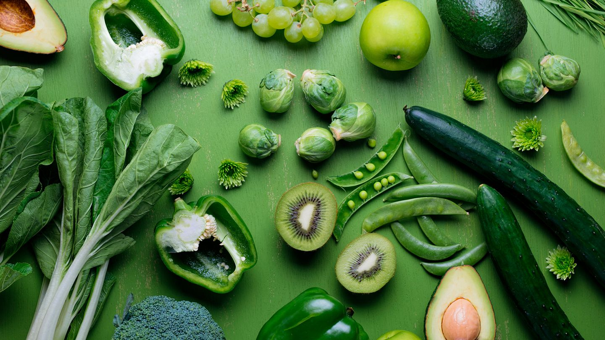

Gestionar Ingredientes
Desde aquí puedes gestionar todos los aspectos de tus ingredientes.
Mis Ingredientes
Consulta, aumenta o elimina los ingredientes de tu inventario.
Gestionar Ingredientes

Agregar Nuevos Ingredientes
Añade nuevos ingredientes a tu inventario de cocina.
Agregar IngredientesInspeccionar Ingredientes
Revisa información detallada de los ingredientes en tu inventario.
Inspeccionar IngredientesGestionar Recetas
Explora y administra tus recetas guardadas o crea nuevas con filtros personalizados.